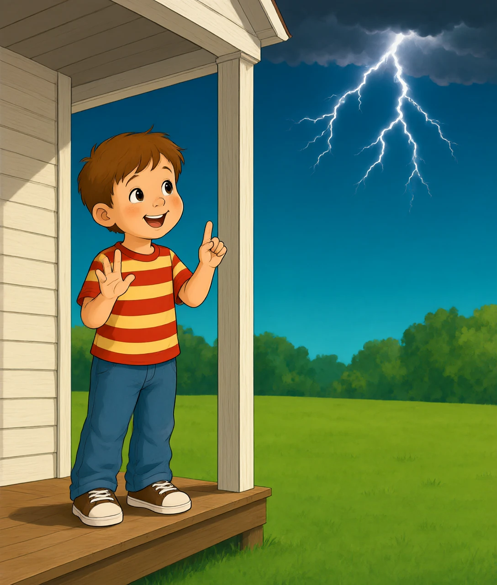
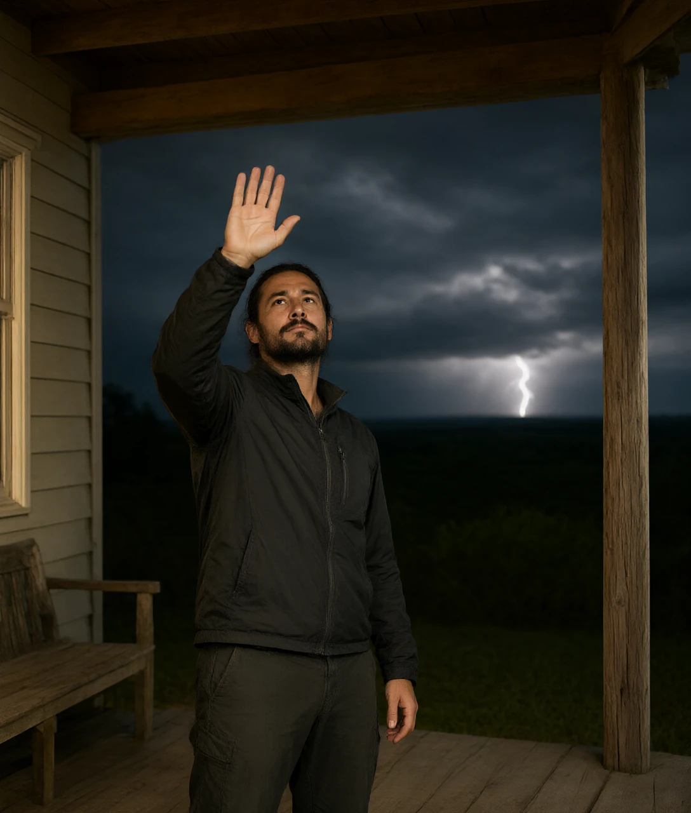
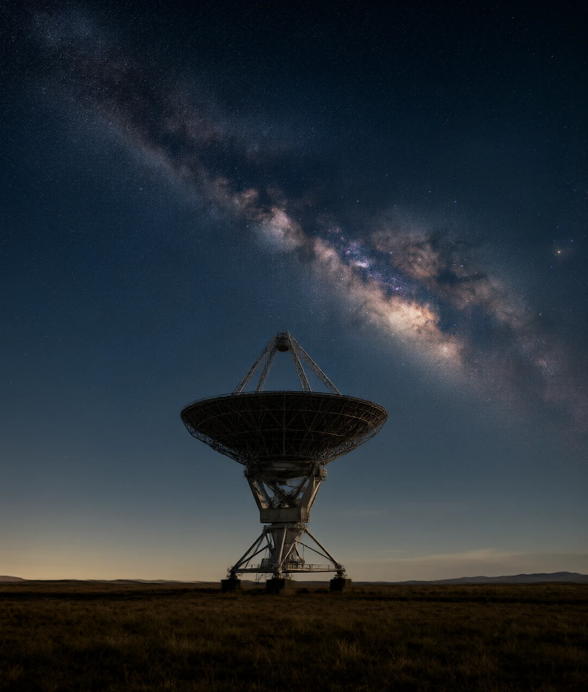

同一道放电，两个信号同时出发，却差了 87 万倍的速度

雷雨天站在屋檐下，你会看到一个固定的顺序。先一道白光，几秒后轰一声。
不是闪电先发生、雷声后发生。它们是同一件事的两半。
闪电是一股电流把空气瞬间烧热。温度约 3 万摄氏度。
电流就是电荷在流动。在这里，它流过的是一条几公里长的空气通道。
通道里的空气在几毫秒内膨胀上千倍，推出一层压缩波。
光和声音，都从这条通道出发。出发时间几乎一样。
差别在速度。好比两个信使同时出发，一个坐飞机，一个走路。
真空中的光速，是每秒 299792458 米。这个数很怪，后面会讲为什么。
15 摄氏度的空气里，声速约每秒 343 米。
两者相差约 87 万倍。
换算一下：你站在 1 公里外。
光走完 1 公里，只要 3.3 微秒。声音要走 2.9 秒。
那几秒的延迟，全部来自这里。
所以不是雷声晚生，而是它走得慢。
那这个每秒 343 米，能不能压得更快？
声音不是一种东西，是一种传递方式。
你说话，声带推动旁边的空气。那层空气再推下一层。一层挤一层往外传。
空气分子本身，不会从你嘴边跑到对方耳朵里。跑的是「挤」这个状态。
这种传递有速度上限，由分子的热运动决定。
室温下，空气分子平均每秒跑约 500 米。但方向是乱的。
分子之间的平均自由程，只有约 68 纳米。纳米就是十亿分之一米。
还没走多远，就撞上另一个分子。所以「挤」每传一小段，就要重新起头。
打个比方：一队人接力传箱子。每人只递一下，可整队的速度比单人跑步慢得多。
整体速度就被拖到每秒 343 米，比分子自己慢一截。
这里有个反直觉的结论：声速和气压基本无关。
爬到 5000 米高原，气压只剩海平面的一半多。声速却几乎没变。
原因是公式里只剩温度和气体种类。
约等于 331.3 乘根号下 T/273.15，T 是绝对温度。气压在推导里被消掉了。
所以高原上说话不会明显变慢，只是氧气少，喘得厉害。
那光速呢？光没有分子，它凭什么这么快？
光速不是谁测出来的巧合数字。它先是被算出来的。
1865 年，麦克斯韦把电和磁的规律，写成了四个方程。
他从方程里解出一种波。速度只由两个常数决定。
把当时的实验值代进去，得到约每秒 30 万公里。
和当时测到的光速吻合。这说明光就是电磁波。电磁波就是电和磁一起往前传的波。
更奇怪的一点：这个速度不属于谁。
好比有人在跑，不管你追上去还是往后退，测出的速度都一样。
19 世纪的物理学家假设有一种介质，叫以太，负责传光。
1887 年，迈克尔逊和莫雷用干涉仪，测地球相对以太的运动。
结果没测到任何差异。以太假说从此失去支撑。
1905 年，狭义相对论干脆把「光速对所有人都一样」写成公理。
1983 年，国际计量大会把「米」重新定义。
一米，等于光在 1/299792458 秒里走过的距离。
从那天起，光速不再是测量对象，而是定义的一部分。
测光速这件事，在计量学上结束了。
知道了速度，剩下的就是算术：怎么量得准？
有了每秒 343 米，测距就成了一道除法题。
看到闪电开始数秒，听到雷声停下。秒数乘 343 米，就是距离。
三秒约 1 公里，相当于从学校走到下一个路口。口算版更简单：秒数除以三，就是公里数。
这个办法有明确的误差。好比一把会热胀冷缩的尺子。
第一，声速随温度变。30 摄氏度约 349 米每秒，0 摄氏度约 331 米每秒。
用 343 去算，极端天气里会有百分之几的偏差。
第二，闪电通道常常是斜的，几公里长。
你听到的雷声，来自离你最近的那一段。不是你眼睛看到的那一点。
第三，声音在大气里走的是弯的。靠近地面的空气暖，上面的冷，声线会向上弯。
所以 20 公里外的雷，你往往听不见。这叫异常静区。
换句话说，数秒法在 1 到 10 公里内相当可靠。超出这个范围，就要打折扣。
这也是气象部门不靠它定位雷电的原因。
他们用多个测站的时间差，做三角定位。
雷距能算，星光的时间也能算。这两件事的尺度差多远？

光速有限，在天文上就变成了时间机器。
太阳的光要走 8 分 20 秒才到地球。你看到的太阳，是 8 分钟前的太阳。
参宿四离我们约 640 光年。你看到的是它 640 年前的样子。
那颗星现在还在不在，没人能立刻确认。相当于收到一封 640 年前寄出的信。
同样的思路，也被用来检验引力。
2017 年 8 月 17 日，LIGO 和 Virgo 探测到双中子星并合。
它们发出的是引力波。引力波就是时空被挤压后传出的涟漪。
1.7 秒后，费米卫星在同一方向看到了伽马射线。
两种信号跨越约 1.3 亿光年，几乎同时到达。
这把引力波速度与光速的差，限制在极小范围内。
这个结果有分量，因为它同时给出了时间和方向两重约束。
还剩一个没解决的问题：那 1.7 秒的差从哪来。
一种解释是，喷流要花点时间才能冲出包层。另一种是，伽马射线本身的发射有延迟。
目前观测样本只有个位数。哪一种成立，学界还没有共识。
